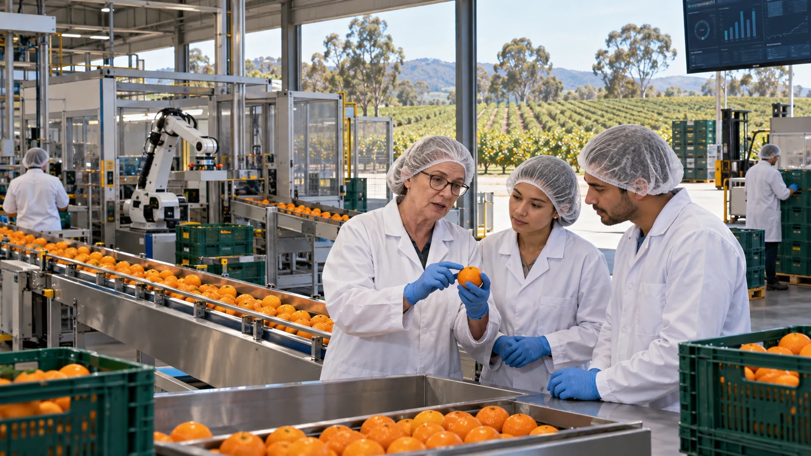
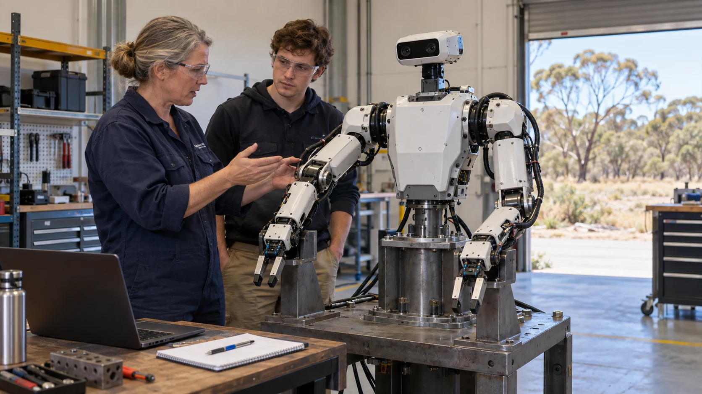

An AI future worth living in.
AI and automation raise a human question: how do we turn growing capability into a better life for everyone? Mutual Futures proposes global change across ownership, income, learning, care and public decisions, guided by Joyful Responsible Abundance.

Start with the life we want
More time with people we love. Secure housing and food. Work we can learn and influence. Care when we need it, and room for music, discovery, travel and rest. These are the outcomes that give a technological transition its purpose.
GAJRA Earth means the Global Association for Joyful Responsible Abundance on Earth. It offers a guiding principle for human self-alignment and AI alignment: examine what we value, take responsibility for consequences, and build useful capability that people can share.
Joy
Does this make life more worth living?
Responsibility
Who benefits, who carries the costs, and what happens to other species and future generations?
Abundance
Does this make useful goods, services, knowledge and opportunity more widely available?
Sources for this section
Change the systems together
A faster factory alone does not guarantee a secure income. An AI tutor is of limited help without time to learn. Cheaper production improves lives when people can access its benefits. Mutual Futures connects these decisions so progress in one area supports the others.
Own a share of productive technology
Give workers and communities a say in businesses, equipment and the benefits of automation.
Support income and time for life
Connect wages, shared services and productive wealth with adequate income, paid learning and funded breaks.
Recognise care and contribution
Make voluntary help visible without turning care into a currency or replacing paid work.
Put people in charge of decisions
Develop women’s leadership, personal AI and public decision-making with authority people can understand and challenge.
Pass on knowledge and build new capability
As owners retire, a fair handover can preserve the knowledge of experienced people and give younger generations the means to advance it. Paid mentoring, artificial intelligence (AI), robotics and extended reality can support that change. Extended reality includes virtual, augmented and mixed reality, such as guidance beside real equipment or a simulation for practising a task.
Existing businesses are one route. New enterprises, research, shared infrastructure and public services are others. In Australia, that can span food production, housing, health, energy, water, design, transport and advanced manufacturing.

Make the next generation of technology
The ambition includes manufacturing robots and autonomous vehicles for land, sea, air and space. Humanoid machines and biomimicry, which draws on the forms and movement of living things, offer different research directions. Each needs a useful task, a coherent design and testing.
Shared ownership asks who benefits from these industries. Shared learning asks who gets to build them. Responsibility asks how they affect workers, communities and the living world.

Four connected contributions
Each contribution has a distinct job. Together they connect purpose, productive ownership, leadership and everyday participation.
GAJRA Earth: purpose and alignment
Develop and test the meaning of Joyful Responsible Abundance across different lives and cultures.
Mutual Futures: ownership and livelihoods
Turn productive capability into shared assets, useful services, learning and time.
500 Queens: leadership and enterprise
Support women to lead enterprises with real decision-making authority and access to capital.
C-Hour: voluntary contribution
Recognise care, shared effort and learning through participant-controlled records.
Bring one practical starting point
A business facing succession, a community need, a skill to teach, a useful machine to develop or an assumption to challenge can become a starting point. Describe what could improve, who needs to be involved and what you can contribute.